punkty = read.csv("data/punkty.csv")3 Dane przestrzenne w R
R jest językiem programowania oraz środowiskiem obliczeniowym pozwalającym na analizę statystyczną danych oraz wizualizację danych. R dostarcza także wielu funkcji do pracy z danymi przestrzennymi. Poniżej przedstawione zostały podstawowe informacje dotyczące pracy z danymi przestrzennymi w R. Więcej informacji znajduje się w książce https://r.geocompx.org/
3.1 Dane przestrzenne - pakiety
R zawiera wiele funkcji pozwalających na przetwarzanie, wizualizację i analizowanie danych przestrzennych. Funkcje te zawarte są w pakietach:
obsługa danych przestrzennych: sf, terra, stars, rastrer, sp
wizualizacja danych przestrzennych: tmap
statystyka przestrzenna
- statystyka punktów: spatstat, sfdep
- statystyka sieci: sfnetworks, tidygraph
- statystyka powierzchni (dane poligonowe): sfdep
- geostatystyka: gstat
Więcej szczegółów na temat pakietów R służących do analizy przestrzennej można znaleźć pod adresem https://cran.r-project.org/view=Spatial.
3.1.1 Pakiet sf
oparty jest o standard OGC o nazwie Simple Features (https://r-spatial.github.io/sf/articles/sf1.html);
definiuje klasę obiektów sf, która jest sposobem reprezentacji przestrzennych danych wektorowych. Pozwala on na stosowanie dodatkowych typów danych wektorowych (np. poligon i multipoligon to dwie oddzielne klasy), łatwiejsze przetwarzanie danych, oraz obsługę przestrzennych baz danych takich jak PostGIS;
jest używany przez kilkadziesiąt dodatkowych pakietów R;
większość funkcji zawartych w pakiecie zaczyna się od prefiksu
st_;więcej informacji:
3.1.2 Pakiet terra
dostarcza funkcji do analizy danych przestrzennych w formacie rastrowym oraz wektorowym;
metody dla danych wektorowych obejmują operacje geometryczne, takie jak intersect i buffer;
metody analizy danych rastrowych obejmują funkcje lokalne, sąsiedztwa, globalne, strefowe oraz operacje geometryczne;
więcej informacji:
3.1.3 Pakiet tmap
pakiet do wizualizacji danych przestrzennych;
sposób tworzenia map jest podobny do składni stosowanej w pakiecie
ggplot2, została jednak dostosowana do tworzenia map a nie wykresów;więcej informacji:
3.1.4 Biblioteki zewnętrzne
GDAL/OGR
- GDAL to biblioteka zawierająca funkcje służące do odczytywania i zapisywania danych w formatach rastrowych.
- OGR to biblioteka służąca to odczytywania i zapisywania danych w formatach wektorowych.
- Wykorzytywana przez pakiety R do wczytywania i zapisywania danych przestrzennych.
GEOS
- Biblioteka GEOS jest używana przez pakiety R (np.
sf) do wykonywania operacji przestrzennych. - Przykładowe funkcje tej biblioteki to tworzenie buforów, wyliczanie centroidów, określanie relacji topologicznych (np. przecina, zawiera, etc.) i wiele innych.
- Biblioteka GEOS jest używana przez pakiety R (np.
PROJ
- Biblioteka PROJ jest używana w R do określania i konwersji układów współrzędnych.
- Bardzo popularnym zapisem układu współrzędnych jest wykorzytanie systemu kodów EPSG (ang. European Petroleum Survey Group), który pozwala on na łatwe identyfikowanie układów współrzędnych. Przykładowo, układ PL 1992 może być określony jako “EPSG:2180”.
- Dane przestrzenne moga też przechowywać opis układu współrzędnych w bardziej złożonej formie - tzw. WKT2.
- Strona https://epsg.org/ zawiera bazę danych układów współrzędnych.
3.2 Reprezentacja danych przestrzennych w R
Dane przestrzenne mogą być reprezentowane w R poprzez wiele różnych klas obiektów z użyciem różnych pakietów R:
dane wektorowe:
- pakiet sf: klasy sf
- pakiet terra: klasa
spatVector
dane rastrowe:
- pakiet terra: klasa
spatRaster
- pakiet terra: klasa
3.3 Import i eksport danych
R pozwala na odczytywanie danych przestrzennych z wielu formatów. Do najpopularniejszych należą:
- dane tekstowe z plików o rozszerzeniu .csv,
- dane wektorowe z plików .shp,
- dane rastrowe z plików w formacie GeoTIFF,
- bazy danych przestrzennych z plików rozszerzeniu .gpkg. Geopaczka (geopackage) może przechowywać zarówno pliki tekstowe, wektorowe oraz rastrowe.
3.3.1 Format .csv (dane punktowe)
Dane z plików tekstowych (np. rozszerzenie .csv) można odczytać za pomocą uogólnionej funkcji read.table() lub też funkcji szczegółowych - read.csv() lub read.csv2().
head(punkty) srtm clc temp ndvi savi x y
1 175.7430 1 13.852222 0.6158061 0.4189449 750298.0 716731.6
2 149.8111 1 15.484209 0.5558816 0.3794864 753482.9 717331.4
3 272.8583 NA 12.760814 0.6067462 0.3745572 747242.5 720589.0
4 187.2777 1 14.324648 0.3756170 0.2386246 755798.9 718828.1
5 260.1366 1 15.908549 0.4598393 0.3087599 746963.5 717533.5
6 160.1416 2 9.941118 0.5600288 0.3453627 756801.6 720474.1Po wczytaniu pliku tekstowego za pomocą funkcji read.csv(), nowy obiekt (np. punkty) jest reprezentowany za pomocą klasy nieprzestrzennej data.frame. Aby obiekt został przetworzony do klasy przestrzennej, konieczne jest określenie które kolumny zawierają informacje o współrzędnych (w tym przykładzie są to kolumny x oraz y).
Do przekształcenia obiektu typu data.frame do obiektu przestrzennego klasy sf wykorzystuje się funkcję st_as_sf() z pakietu sf. Funkcja st_as_sf() wymaga zdefniowania obiektu zawierającego dane (w tym wypadku punkty), nazw kolumn zawierających współrzędne x oraz y (coords = c(“x”, “y”)). Warto także na tym etapie zdefiniować układ współrzędnych (crs = “EPSG:2180”).
library(sf)Linking to GEOS 3.10.2, GDAL 3.4.1, PROJ 8.2.1; sf_use_s2() is TRUEpunkty_sf = st_as_sf(punkty, coords = c("x", "y"), crs = "EPSG:2180")
punkty_sfSimple feature collection with 248 features and 5 fields
Geometry type: POINT
Dimension: XY
Bounding box: xmin: 745592.5 ymin: 712642.4 xmax: 756967.8 ymax: 721238.7
Projected CRS: ETRF2000-PL / CS92
First 10 features:
srtm clc temp ndvi savi geometry
1 175.7430 1 13.852222 0.6158061 0.4189449 POINT (750298 716731.6)
2 149.8111 1 15.484209 0.5558816 0.3794864 POINT (753482.9 717331.4)
3 272.8583 NA 12.760814 0.6067462 0.3745572 POINT (747242.5 720589)
4 187.2777 1 14.324648 0.3756170 0.2386246 POINT (755798.9 718828.1)
5 260.1366 1 15.908549 0.4598393 0.3087599 POINT (746963.5 717533.5)
6 160.1416 2 9.941118 0.5600288 0.3453627 POINT (756801.6 720474.1)
7 192.9223 2 13.514751 0.6009588 0.3737249 POINT (752698 718623.6)
8 234.9989 1 12.919225 0.4979195 0.2978503 POINT (749399.8 716955.2)
9 228.7312 1 19.247132 0.3819634 0.2077981 POINT (748766.6 713889)
10 240.5474 2 10.529105 0.5795159 0.3805268 POINT (749290.4 718861)Należy zwrócić uwagę, że po przekształceniu danych wczytanych z pliku tekstowego (punkty.csv) na obiekt przestrzenny (punkty_sf) w tabeli atrybutów nie ma już kolumn “x” oraz “y”. Obiekt przestrzenny zawiera natomiast kolumnę geometry z informacją o współrzędnych punktów. Ponadto po wyświetleniu obiektu punkty_sf w nagłówku mamy podane informacje o układzie współrzędnych, zasięgu danych (obwiedni, bounding box).
Prostą wizualizacje danych klasy przestrzennej można uzyskać za pomocą funkcji plot().
plot(punkty_sf)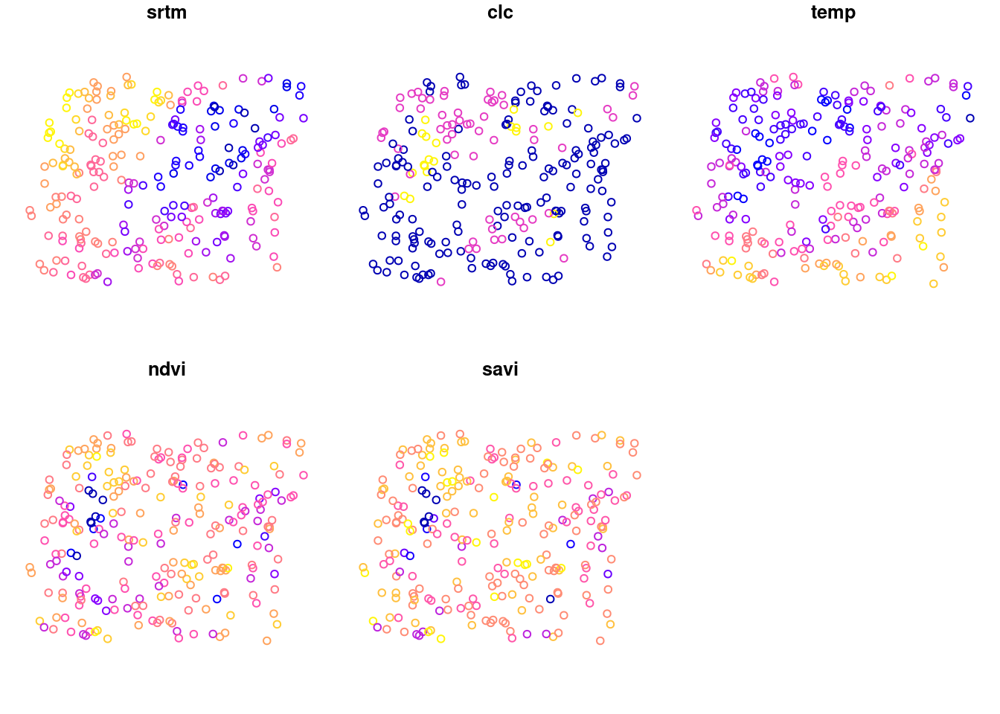
Funkcja plot() wyświetli wszystkie zmienne. Wyświetlenie wybranej zmiennej wymaga zdefiniowania jej nazwy.
plot(punkty_sf["temp"])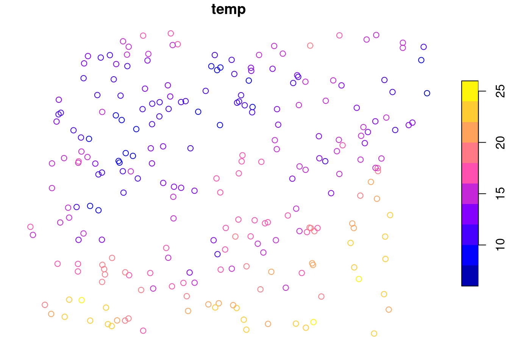
3.3.2 Import i eksport danych wektorowych
Dane przestrzenne zapisane w pliku (.gpkg, .shp) można wczytać do R wykorzystując funkcje read_sf() z pakietu sf.
library(sf)
powiaty_wlkp = read_sf("data/wlkp_powiaty.gpkg")Jeśli geopaczka zawiera kilka warstw na etapie wczytywania pliku można podać także nazwę warstwy.
library(sf)
powiaty_wlkp = read_sf("data/wlkp_powiaty.gpkg", layer = "powiaty")Dane przestrzenne można zapisać do pliku wykorzystując funkcję write_sf() z pakietu sf (funkcja ta nadpisuje plik). Dane mogą być zapisane do różnych formatów (np. geopaczka lub plik ESRI Shapefile).
#create output directory out
dir.create("out")
write_sf(powiaty_wlkp, dsn = "out/out_powiaty_wlkp.shp")R pozwala także na zapisanie kilku warstw do istniejącej geopaczki. Użyjemy w tym celu funkcji st_write(), która automatycznie nie nadpisuje pliku. W przypadku, gdy chcemy stworzyć geopaczkę składająca się z kilku warstw na etapie zapisu należy podać także nazwę warstwy (argument layer). Argument delete_dsn = TRUE usuwa istniejący wcześniej plik.
st_write(powiaty_wlkp, dsn = "out/out_powiaty_wlkp.gpkg", layer = "powiaty2", delete_dsn = TRUE)Deleting source `out/out_powiaty_wlkp.gpkg' using driver `GPKG'
Writing layer `powiaty2' to data source
`out/out_powiaty_wlkp.gpkg' using driver `GPKG'
Writing 35 features with 2 fields and geometry type Multi Polygon.st_write(powiaty_wlkp, dsn = "out/out_powiaty_wlkp.gpkg", layer = "powiaty3")Writing layer `powiaty3' to data source
`out/out_powiaty_wlkp.gpkg' using driver `GPKG'
Writing 35 features with 2 fields and geometry type Multi Polygon.Aby dowiedzieć się, jakie warstwy są zapisane w geopaczce można użyć funkcji st_layers().
st_layers("out/out_powiaty_wlkp.gpkg")Driver: GPKG
Available layers:
layer_name geometry_type features fields crs_name
1 powiaty2 Multi Polygon 35 2 ETRF2000-PL / CS92
2 powiaty3 Multi Polygon 35 2 ETRF2000-PL / CS923.3.3 Import i eksport danych rastrowych
Do obsługi danych rastrowych zostanie wykorzystany pakiet terra. Funkcja rast() pozwala na wczytanie danych rastrowych do klasy SpatRaster. Funkcja ta obsługuje zarówno jednokanałowe jak i wielokanałowe (wielowarstwowe) pliki rastrowe. Przykładem pliku rastrowego, w którym zostało zapisanych kilka kanałów - warstw jest plik siatka-all.tif.
library(terra)
srtm = rast("data/srtm.tif")
srtmclass : SpatRaster
size : 96, 127, 1 (nrow, ncol, nlyr)
resolution : 90, 90 (x, y)
extent : 745541.7, 756971.7, 712616.2, 721256.2 (xmin, xmax, ymin, ymax)
coord. ref. : ETRF2000-PL / CS92 (EPSG:2180)
source : srtm.tif
name : srtm siatka_all = rast("data/siatka-all.tif")
siatka_allclass : SpatRaster
size : 96, 127, 5 (nrow, ncol, nlyr)
resolution : 90, 90 (x, y)
extent : 745541.7, 756971.7, 712616.2, 721256.2 (xmin, xmax, ymin, ymax)
coord. ref. : +proj=tmerc +lat_0=0 +lon_0=19 +k=0.9993 +x_0=500000 +y_0=-5300000 +ellps=GRS80 +towgs84=0,0,0,0,0,0,0 +units=m +no_defs
source : siatka-all.tif
names : siatka-all_1, siatka-all_2, siatka-all_3, siatka-all_4, siatka-all_5 Prostą wizualizację danych rastrowych można uzyskać za pomocą funkcji plot().
plot(srtm)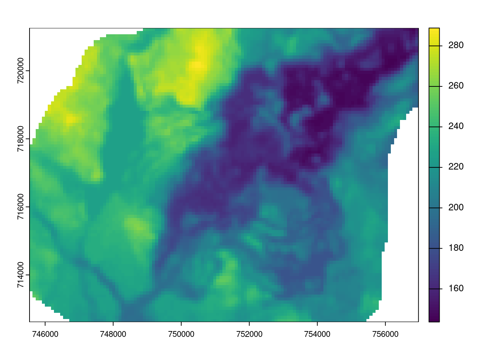
plot(siatka_all)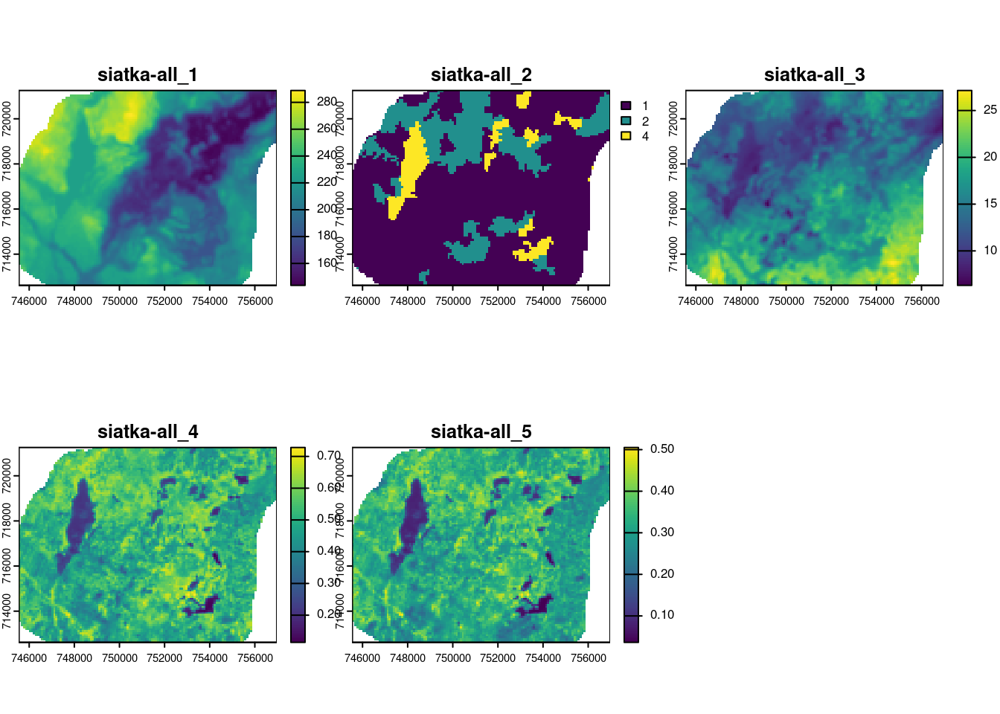
plot(siatka_all["siatka-all_2"])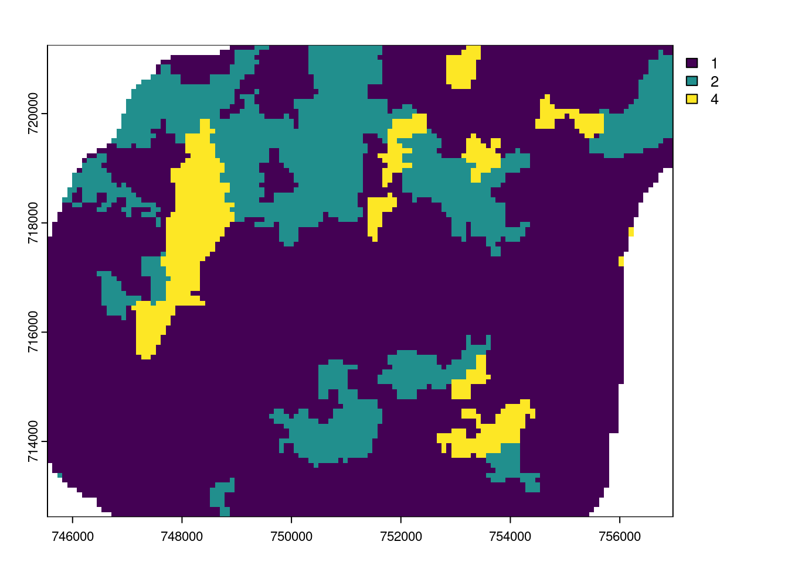
Dane można zapisać do pliku używając funkcji writeRaster() z pakietu terra.
writeRaster(srtm, "out/out_srtm.tif", overwrite = TRUE)writeRaster(siatka_all, "out/out_siatka_all.tif", overwrite = TRUE)writeRaster(siatka_all["siatka-all_2"], "out/out_clc.tif", overwrite = TRUE)3.4 Struktura danych przestrzennych w R
3.4.1 Dane wektorowe
Podstawowe informacje o obiekcie można uzyskać poprzez wpisanie jego nazwy:
punkty_sfSimple feature collection with 248 features and 5 fields
Geometry type: POINT
Dimension: XY
Bounding box: xmin: 745592.5 ymin: 712642.4 xmax: 756967.8 ymax: 721238.7
Projected CRS: ETRF2000-PL / CS92
First 10 features:
srtm clc temp ndvi savi geometry
1 175.7430 1 13.852222 0.6158061 0.4189449 POINT (750298 716731.6)
2 149.8111 1 15.484209 0.5558816 0.3794864 POINT (753482.9 717331.4)
3 272.8583 NA 12.760814 0.6067462 0.3745572 POINT (747242.5 720589)
4 187.2777 1 14.324648 0.3756170 0.2386246 POINT (755798.9 718828.1)
5 260.1366 1 15.908549 0.4598393 0.3087599 POINT (746963.5 717533.5)
6 160.1416 2 9.941118 0.5600288 0.3453627 POINT (756801.6 720474.1)
7 192.9223 2 13.514751 0.6009588 0.3737249 POINT (752698 718623.6)
8 234.9989 1 12.919225 0.4979195 0.2978503 POINT (749399.8 716955.2)
9 228.7312 1 19.247132 0.3819634 0.2077981 POINT (748766.6 713889)
10 240.5474 2 10.529105 0.5795159 0.3805268 POINT (749290.4 718861)Obiekty klasy sf() są zbudowane z tabeli (data frame) wraz z dodatkową kolumną zawierającą geometrię (często nazywaną geometry lub geom) oraz szeregu atrybutów przestrzennych.
Strukturę obiektu sf można też sprawdzić za pomocą funkcji str():
str(punkty_sf)Classes 'sf' and 'data.frame': 248 obs. of 6 variables:
$ srtm : num 176 150 273 187 260 ...
$ clc : int 1 1 NA 1 1 2 2 1 1 2 ...
$ temp : num 13.9 15.5 12.8 14.3 15.9 ...
$ ndvi : num 0.616 0.556 0.607 0.376 0.46 ...
$ savi : num 0.419 0.379 0.375 0.239 0.309 ...
$ geometry:sfc_POINT of length 248; first list element: 'XY' num 750298 716732
- attr(*, "sf_column")= chr "geometry"
- attr(*, "agr")= Factor w/ 3 levels "constant","aggregate",..: NA NA NA NA NA
..- attr(*, "names")= chr [1:5] "srtm" "clc" "temp" "ndvi" ...3.4.1.1 Konwersja danych przestrzennych do danych nieprzestrzennych
Obiekt klasy sf można przetworzyć na obiekt nieprzestrzenny klasy data.frame używając funkcji st_drop_geometry(). Funkcja st_drop_geometry() pozwala na pozbycie się informacji przestrzennych z obiektu klasy sf i uzyskanie jedynie obiektu klasy data.frame zawierającego nieprzestrzenne informacje o kolejnych punktach w tym zbiorze.
punkty_df = st_drop_geometry(punkty_sf)
head(punkty_df) srtm clc temp ndvi savi
1 175.7430 1 13.852222 0.6158061 0.4189449
2 149.8111 1 15.484209 0.5558816 0.3794864
3 272.8583 NA 12.760814 0.6067462 0.3745572
4 187.2777 1 14.324648 0.3756170 0.2386246
5 260.1366 1 15.908549 0.4598393 0.3087599
6 160.1416 2 9.941118 0.5600288 0.3453627Proszę zwrócić uwagę, że powyższy obiekt nie zawiera już informacji o współrzęnych (kolumn x oraz y).
3.4.1.2 Współrzędne
Funkcja st_coordinates() pozwala na wydobycie współrzędnych z obiektu punktowego klasy sf.
xy = st_coordinates(punkty_sf)
head(xy) X Y
[1,] 750298.0 716731.6
[2,] 753482.9 717331.4
[3,] 747242.5 720589.0
[4,] 755798.9 718828.1
[5,] 746963.5 717533.5
[6,] 756801.6 720474.1Informację o współrzędnych można dołączyć do ramki danych nieprzestrzennych.
punkty_df2 = cbind(punkty_df, xy)
head(punkty_df2) srtm clc temp ndvi savi X Y
1 175.7430 1 13.852222 0.6158061 0.4189449 750298.0 716731.6
2 149.8111 1 15.484209 0.5558816 0.3794864 753482.9 717331.4
3 272.8583 NA 12.760814 0.6067462 0.3745572 747242.5 720589.0
4 187.2777 1 14.324648 0.3756170 0.2386246 755798.9 718828.1
5 260.1366 1 15.908549 0.4598393 0.3087599 746963.5 717533.5
6 160.1416 2 9.941118 0.5600288 0.3453627 756801.6 720474.13.4.1.3 Obwiednia
Funkcja st_bbox() określa zasięg przestrzenny danych w jednostkach mapy.
st_bbox(punkty_sf) xmin ymin xmax ymax
745592.5 712642.4 756967.8 721238.7 3.4.1.4 Układ współrzędnych
Funkcja st_crs() wyświetla definicję układu współrzędnych w formacie WKT2.
st_crs(punkty_sf)Coordinate Reference System:
User input: EPSG:2180
wkt:
PROJCRS["ETRF2000-PL / CS92",
BASEGEOGCRS["ETRF2000-PL",
DATUM["ETRF2000 Poland",
ELLIPSOID["GRS 1980",6378137,298.257222101,
LENGTHUNIT["metre",1]]],
PRIMEM["Greenwich",0,
ANGLEUNIT["degree",0.0174532925199433]],
ID["EPSG",9702]],
CONVERSION["Poland CS92",
METHOD["Transverse Mercator",
ID["EPSG",9807]],
PARAMETER["Latitude of natural origin",0,
ANGLEUNIT["degree",0.0174532925199433],
ID["EPSG",8801]],
PARAMETER["Longitude of natural origin",19,
ANGLEUNIT["degree",0.0174532925199433],
ID["EPSG",8802]],
PARAMETER["Scale factor at natural origin",0.9993,
SCALEUNIT["unity",1],
ID["EPSG",8805]],
PARAMETER["False easting",500000,
LENGTHUNIT["metre",1],
ID["EPSG",8806]],
PARAMETER["False northing",-5300000,
LENGTHUNIT["metre",1],
ID["EPSG",8807]]],
CS[Cartesian,2],
AXIS["northing (x)",north,
ORDER[1],
LENGTHUNIT["metre",1]],
AXIS["easting (y)",east,
ORDER[2],
LENGTHUNIT["metre",1]],
USAGE[
SCOPE["Topographic mapping (medium and small scale)."],
AREA["Poland - onshore and offshore."],
BBOX[49,14.14,55.93,24.15]],
ID["EPSG",2180]]3.4.2 Dane rastrowe
Po wczytaniu danych rastrowych do R otrzymamy następujące informacje: wielkość rastra zdefiniowaną liczbą wierszy i kolumn (dimensions), rozdzielczość danych (resolution), zasięg warstwy (extent), informację o układzie współrzędnych warstwy (coord. ref.), nazwę pliku źródłowego wczytanego do R (source) oraz nazwę warstwy (name).
srtmclass : SpatRaster
size : 96, 127, 1 (nrow, ncol, nlyr)
resolution : 90, 90 (x, y)
extent : 745541.7, 756971.7, 712616.2, 721256.2 (xmin, xmax, ymin, ymax)
coord. ref. : ETRF2000-PL / CS92 (EPSG:2180)
source : srtm.tif
name : srtm W przypadku pliku rastrowego zawierającego kilka kanałów (bands) zostaną podane nazwy (names) wszystkich kanałów.
siatka_allclass : SpatRaster
size : 96, 127, 5 (nrow, ncol, nlyr)
resolution : 90, 90 (x, y)
extent : 745541.7, 756971.7, 712616.2, 721256.2 (xmin, xmax, ymin, ymax)
coord. ref. : +proj=tmerc +lat_0=0 +lon_0=19 +k=0.9993 +x_0=500000 +y_0=-5300000 +ellps=GRS80 +towgs84=0,0,0,0,0,0,0 +units=m +no_defs
source : siatka-all.tif
names : siatka-all_1, siatka-all_2, siatka-all_3, siatka-all_4, siatka-all_5 Przetworzenie obiektu klasy SpatRaster na data.frame odbywa się natomiast używając funkcji as.data.frame().
srtm_df = as.data.frame(srtm)Funkcje st_bbox() oraz st_crs() można także zastsować do obiektu klasy SpatRaster.
st_bbox(srtm) xmin ymin xmax ymax
745541.7 712616.2 756971.7 721256.2 st_crs(siatka_all)3.5 Przetwarzanie danych wektorowych w R
3.5.1 Łączenie danych przestrzennych i atrybutowych
Plik wlkp_powiaty.gpkg zawiera granice powiatów województwa wielkopolskiego, a plik bezrobocie_wlkp.csv zawiera informacje o stopie bezrobocia w powiatach województwa wielkopolskiego w 2004, 2010 oraz 2023 roku.
library(sf)
powiaty_wlkp = read_sf("data/wlkp_powiaty.gpkg")
head(powiaty_wlkp)Simple feature collection with 6 features and 2 fields
Geometry type: MULTIPOLYGON
Dimension: XY
Bounding box: xmin: 290692.6 ymin: 427189.4 xmax: 431664.5 ymax: 588338.5
Projected CRS: ETRF2000-PL / CS92
# A tibble: 6 × 3
Nazwa TERYT geom
<chr> <chr> <MULTIPOLYGON [m]>
1 chodzieski 3001 (((365822.6 579030.7, 365850.1 579032.1, 365909…
2 czarnkowsko-trzcianecki 3002 (((342585.5 579834.4, 342574.5 579840.3, 342578…
3 gnieźnieński 3003 (((385846.8 531930.4, 385847.9 531933.4, 385852…
4 gostyński 3004 (((367318.3 453501.8, 367470.1 453670.5, 367470…
5 grodziski 3005 (((326493 471503, 326484.8 471495.6, 326449.4 4…
6 jarociński 3006 (((394140.5 464050.1, 394117.8 464090.4, 394120…bezrobocie_wlkp = read.csv("data/bezrobocie_wlkp.csv", sep = ";", dec = ",")
head(bezrobocie_wlkp) Kod Nazwa sb2004 sb2010 sb2023
1 3001000 Powiat chodzieski 23.6 15.2 7.5
2 3002000 Powiat czarnkowsko-trzcianecki 23.8 15.0 4.8
3 3003000 Powiat gnieźnieński 24.0 12.7 4.5
4 3004000 Powiat gostyński 18.6 12.5 5.1
5 3005000 Powiat grodziski 10.8 8.1 4.6
6 3006000 Powiat jarociński 24.2 15.2 4.3Aby połączyć dane przestrzenne z informacją o stopie bezrobocia wykorzystane zostaną pola TERYT oraz Kod. Kolumna TERYT w pliku wlkp_powiaty.gpkg zawiera identyfikator powiatu w postaci 4 cyfr. Do pola TERYT trzeba dodać “000”, aby identyfikator powiatu w obu obiektach był taki sam.
powiaty_wlkp$TERYT = paste(powiaty_wlkp$TERYT, "000", sep="")Do połączenia danych przestrzennych i nieprzestrzennych zostanie wykorzystana funkcja merge(). Funkcja ta nie będzie działać, jeśli będziemy chcieli połączyć dwa obiekty klasy przestrzennej.
powiaty_wlkp_attr = merge(powiaty_wlkp, bezrobocie_wlkp[, -2], by.x = "TERYT", by.y = "Kod")
head(powiaty_wlkp_attr)Simple feature collection with 6 features and 5 fields
Geometry type: MULTIPOLYGON
Dimension: XY
Bounding box: xmin: 290692.6 ymin: 427189.4 xmax: 431664.5 ymax: 588338.5
Projected CRS: ETRF2000-PL / CS92
TERYT Nazwa sb2004 sb2010 sb2023
1 3001000 chodzieski 23.6 15.2 7.5
2 3002000 czarnkowsko-trzcianecki 23.8 15.0 4.8
3 3003000 gnieźnieński 24.0 12.7 4.5
4 3004000 gostyński 18.6 12.5 5.1
5 3005000 grodziski 10.8 8.1 4.6
6 3006000 jarociński 24.2 15.2 4.3
geom
1 MULTIPOLYGON (((365822.6 57...
2 MULTIPOLYGON (((342585.5 57...
3 MULTIPOLYGON (((385846.8 53...
4 MULTIPOLYGON (((367318.3 45...
5 MULTIPOLYGON (((326493 4715...
6 MULTIPOLYGON (((394140.5 46...3.5.2 Tworzenie obiektów wektorowych
Funkcja st_point() z pakietu sf tworzy obiekt punktowy Simple Feautures na podstawie wektora, listy lub macierzy zawierającej współrzędne x oraz y.
st_point(c(16.941820, 52.464279))POINT (16.94182 52.46428)Funkcja st_sfc() z pakietu sf tworzy kolumnę z geometrią oraz dodaje informację o układzie współrzędnych dla obiektu typu Simple Feautures.
p1 = st_sfc(st_point(c(16.941820, 52.464279)), crs = 4326)
p1Geometry set for 1 feature
Geometry type: POINT
Dimension: XY
Bounding box: xmin: 16.94182 ymin: 52.46428 xmax: 16.94182 ymax: 52.46428
Geodetic CRS: WGS 84POINT (16.94182 52.46428)plot(p1)Do utworzenia obiektu punktowego klasy sf na podstawie ramki danych (data.frame) używa się funkcji st_as_sf().
3.5.3 Zmiana układu współrzędnych
Obiekt p1 został utworzony podając współrzędne w układzie WGS84 (EPSG: 4326). Do zmiany układu współrzędnych służy funkcja st_transform(). Poniżej zmienimy układ na PUWG1992 (EPSG: 2180).
p1a = st_transform(p1, 2180)
p1aGeometry set for 1 feature
Geometry type: POINT
Dimension: XY
Bounding box: xmin: 360220.9 ymin: 512925.4 xmax: 360220.9 ymax: 512925.4
Projected CRS: ETRF2000-PL / CS92POINT (360220.9 512925.4)3.5.4 Strefa buforowa
Funkcja st_buffer() pozwala na wyznaczenie strefy bufforowej (otoczki) o zadanej odległości w jednostkach układu współrzędnych (w tym wypadku 50000 metrów).
bfr = st_buffer(p1a, dist = 50000)
bfrGeometry set for 1 feature
Geometry type: POLYGON
Dimension: XY
Bounding box: xmin: 310220.9 ymin: 462925.4 xmax: 410220.9 ymax: 562925.4
Projected CRS: ETRF2000-PL / CS92POLYGON ((410220.9 512925.4, 410152.4 510308.6,...plot(bfr)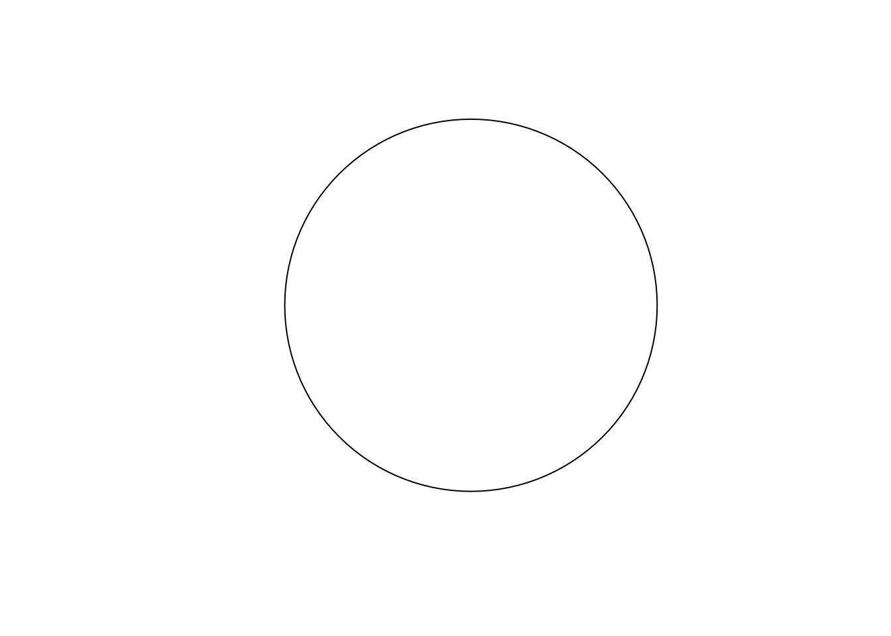
3.5.5 Centroidy poligonów
Funkcja st_centroid() wyznacza centroidy poligonów.
powiaty_centroidy = st_centroid(powiaty_wlkp)Warning: st_centroid assumes attributes are constant over geometrieshead(powiaty_centroidy)Simple feature collection with 6 features and 2 fields
Geometry type: POINT
Dimension: XY
Bounding box: xmin: 319500.7 ymin: 442156.9 xmax: 404928.2 ymax: 568496.7
Projected CRS: ETRF2000-PL / CS92
# A tibble: 6 × 3
Nazwa TERYT geom
<chr> <chr> <POINT [m]>
1 chodzieski 3001000 (365156.4 568496.7)
2 czarnkowsko-trzcianecki 3002000 (323039.8 563992.2)
3 gnieźnieński 3003000 (404928.2 520088.9)
4 gostyński 3004000 (366508.5 442156.9)
5 grodziski 3005000 (319500.7 482387.3)
6 jarociński 3006000 (398122.1 459364)plot(powiaty_centroidy["geom"])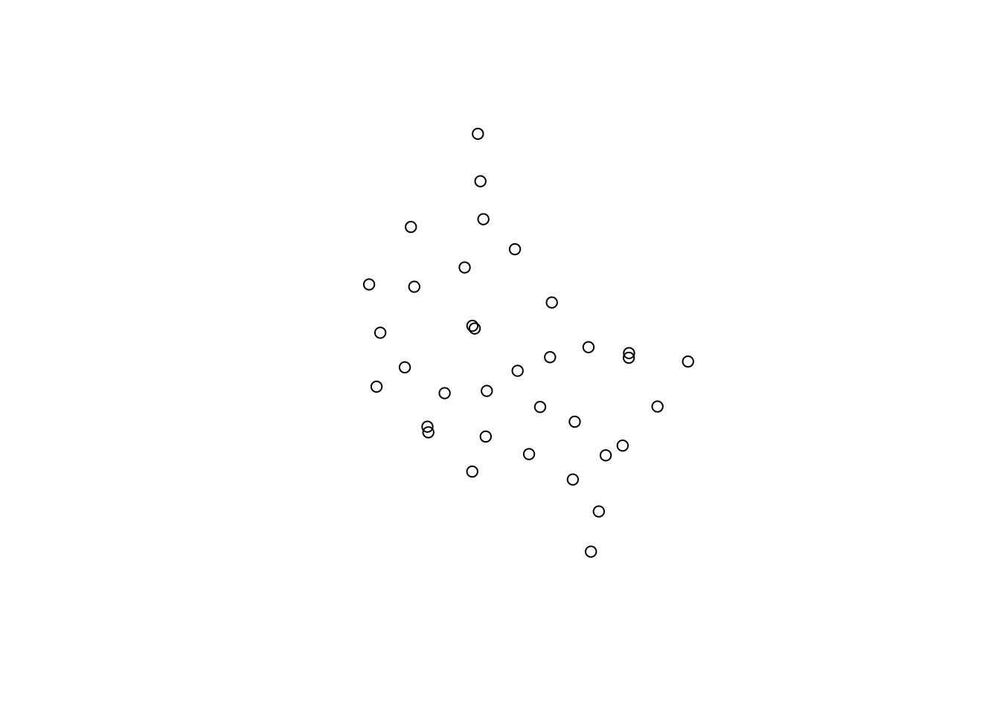
centroidy_attr = st_centroid(powiaty_wlkp_attr)Warning: st_centroid assumes attributes are constant over geometriescentroidy_attrSimple feature collection with 35 features and 5 fields
Geometry type: POINT
Dimension: XY
Bounding box: xmin: 298759.2 ymin: 375275.2 xmax: 484054.5 ymax: 618120.6
Projected CRS: ETRF2000-PL / CS92
First 10 features:
TERYT Nazwa sb2004 sb2010 sb2023
1 3001000 chodzieski 23.6 15.2 7.5
2 3002000 czarnkowsko-trzcianecki 23.8 15.0 4.8
3 3003000 gnieźnieński 24.0 12.7 4.5
4 3004000 gostyński 18.6 12.5 5.1
5 3005000 grodziski 10.8 8.1 4.6
6 3006000 jarociński 24.2 15.2 4.3
7 3007000 kaliski 17.2 8.5 3.1
8 3008000 kępiński 8.9 5.6 1.6
9 3009000 kolski 24.1 14.4 3.9
10 3010000 koniński 27.5 18.1 8.3
geom
1 POINT (365156.4 568496.7)
2 POINT (323039.8 563992.2)
3 POINT (404928.2 520088.9)
4 POINT (366508.5 442156.9)
5 POINT (319500.7 482387.3)
6 POINT (398122.1 459364)
7 POINT (446068.2 436904.3)
8 POINT (427638.9 375275.2)
9 POINT (484054.5 485762.4)
10 POINT (449786.4 490670.6)3.5.6 Selekcja na podstawie lokalizacji
Używając indeksowania można w R wykonywać selekcje na podstawie lokalizacji. Poniżej wybrano wszystkie centroidy przecinające się z obiektem bfr. Możliwe jest stosowanie także innych metod opisujących relacje przestrzenne.
centroidy_bfr = powiaty_centroidy[bfr, ]centroidy_bfrSimple feature collection with 9 features and 2 fields
Geometry type: POINT
Dimension: XY
Bounding box: xmin: 325004.7 ymin: 467381.3 xmax: 404928.2 ymax: 551033.6
Projected CRS: ETRF2000-PL / CS92
# A tibble: 9 × 3
Nazwa TERYT geom
<chr> <chr> <POINT [m]>
1 gnieźnieński 3003000 (404928.2 520088.9)
2 kościański 3011000 (342649.8 467381.3)
3 obornicki 3016000 (354281.4 540430.6)
4 Poznań 3064000 (358768.1 506529.9)
5 poznański 3021000 (360114.6 504966.5)
6 szamotulski 3024000 (325004.7 529234.5)
7 średzki 3025000 (385041.2 480378.2)
8 śremski 3026000 (367149 468692.8)
9 wągrowiecki 3028000 (383478.6 551033.6)plot(centroidy_bfr["geom"])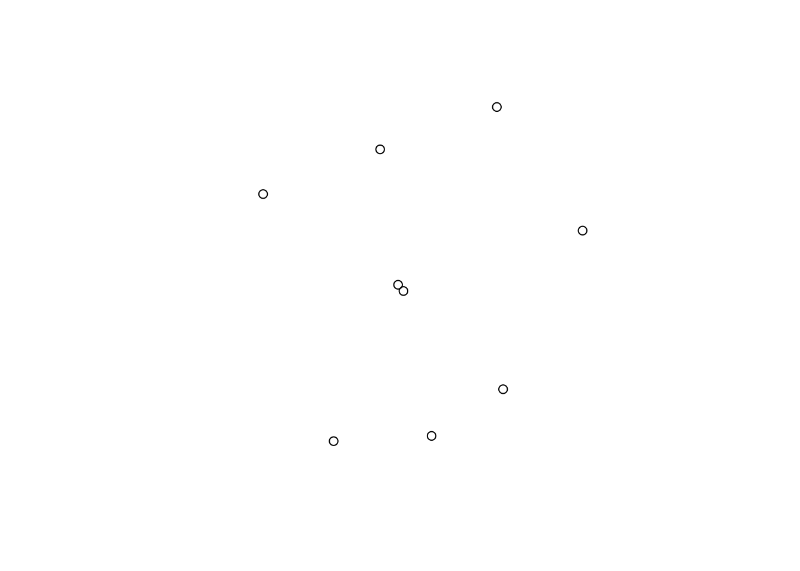
powiaty_centroidy[bfr, , op = st_within]3.5.7 Selekcja na podstawie atrybutów
Obiekty klasy sf() są zbudowane z tabeli (data frame) zawierajacej szereg atrybutów oraz dodatkową kolumnę zawierającą geometrie (często nazywaną geometry lub geom). Tabelę atrybutów można przeszukiwać używając dowolnych nprzeznaczonych do danych nieprzestrzennych (np. indeksowania).
poznan = powiaty_wlkp[powiaty_wlkp$Nazwa == "Poznań",]
plot(st_geometry(poznan))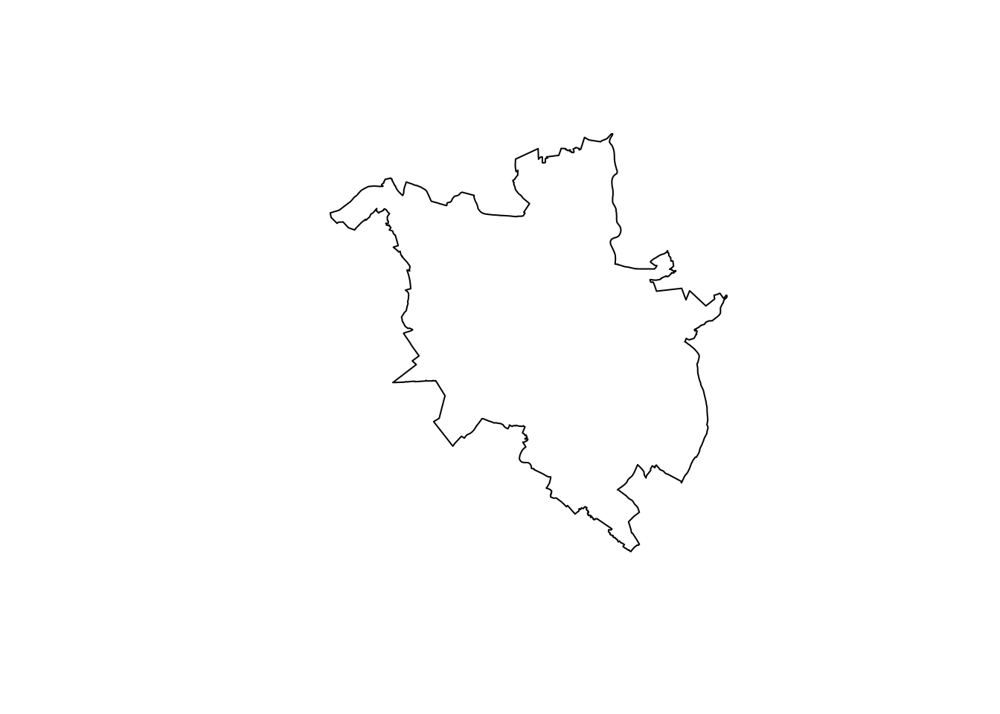
3.5.8 Tworzenie siatki - obiekt wektorowy
Tworzenie siatki składa się z 3 kroków:
- Utworzenie poligonu o zasięgu warstwy (w przykładzie poligon o zasięgu warstwy powiaty_wlkp).
wlkp_bb = st_sf(geom = st_as_sfc(st_bbox(powiaty_wlkp)))
plot(wlkp_bb)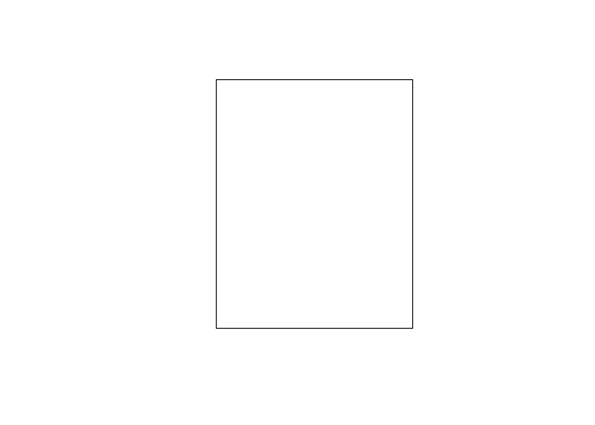
- Utworzenie siatki używając funkcji
st_make_grid(). Pierwszym argumentem jest obiekt definiujący zasięg siatki, a drugi (n) definiuje liczbę kolumn oraz wierszy. W przykładzie zostanie utworzona siatka o wymiarach 10x10.
wlkp_grid = st_make_grid(wlkp_bb, n = 10)
wlkp_gridGeometry set for 100 features
Geometry type: POLYGON
Dimension: XY
Bounding box: xmin: 281949.4 ymin: 360241.8 xmax: 507167.3 ymax: 645513.7
Projected CRS: ETRF2000-PL / CS92
First 5 geometries:POLYGON ((281949.4 360241.8, 304471.2 360241.8,...POLYGON ((304471.2 360241.8, 326993 360241.8, 3...POLYGON ((326993 360241.8, 349514.8 360241.8, 3...POLYGON ((349514.8 360241.8, 372036.6 360241.8,...POLYGON ((372036.6 360241.8, 394558.3 360241.8,...plot(wlkp_grid)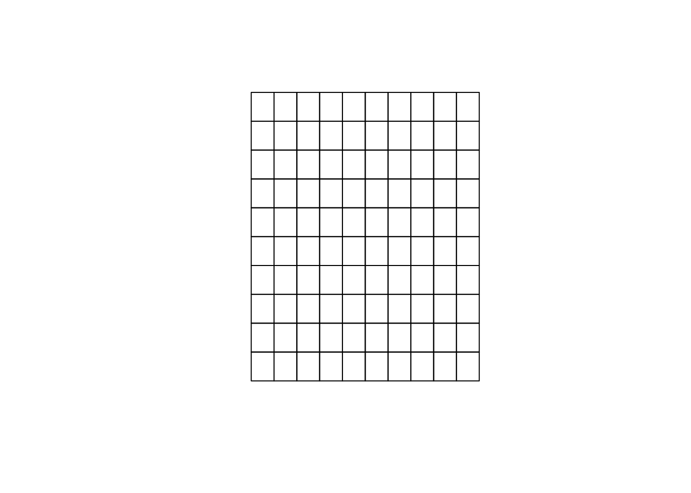
Funkcja st_sf() przekształca utworzoną siatkę na obiekt klasy sf składający się z ramki danych (data.frame) oraz kolumny zawierającej geometrię.
wlkp_grid_sf = st_sf(geometry = wlkp_grid)
wlkp_grid_sfSimple feature collection with 100 features and 0 fields
Geometry type: POLYGON
Dimension: XY
Bounding box: xmin: 281949.4 ymin: 360241.8 xmax: 507167.3 ymax: 645513.7
Projected CRS: ETRF2000-PL / CS92
First 10 features:
geometry
1 POLYGON ((281949.4 360241.8...
2 POLYGON ((304471.2 360241.8...
3 POLYGON ((326993 360241.8, ...
4 POLYGON ((349514.8 360241.8...
5 POLYGON ((372036.6 360241.8...
6 POLYGON ((394558.3 360241.8...
7 POLYGON ((417080.1 360241.8...
8 POLYGON ((439601.9 360241.8...
9 POLYGON ((462123.7 360241.8...
10 POLYGON ((484645.5 360241.8...Podsumowując, do utworzenia siatki potrzebne jest wykonanie 3 poniższych kroków.
wlkp_bb = st_sf(geom = st_as_sfc(st_bbox(powiaty_wlkp)))
wlkp_grid = st_make_grid(wlkp_bb, n = 10)
wlkp_grid_sf = st_sf(geometry = wlkp_grid)3.6 Przetwarzanie danych rastrowych w R
3.6.1 Tworzenie siatki rastrowej
Funkcja rast() z pakietu terra pozwala na wczytanie danych rastrowych zapisanych w zewnętrznym pliku lub na utworzenie obiektu rastrowego o zadanym zasięgu, rozdzielczości oraz układzie współrzędnych.
library(terra)
moja_siatka = rast(ext = poznan, res = 90, crs = crs(poznan))
moja_siatkaclass : SpatRaster
size : 269, 255, 1 (nrow, ncol, nlyr)
resolution : 90, 90 (x, y)
extent : 345943.2, 368893.2, 493660, 517870 (xmin, xmax, ymin, ymax)
coord. ref. : ETRF2000-PL / CS92 (EPSG:2180) moja_siatka2 = rast(xmin = 345943.2, ymin = 493660,
xmax = 368893.2, ymax = 517870,
res = 90, crs = crs(poznan))
moja_siatka2class : SpatRaster
size : 269, 255, 1 (nrow, ncol, nlyr)
resolution : 90, 90 (x, y)
extent : 345943.2, 368893.2, 493660, 517870 (xmin, xmax, ymin, ymax)
coord. ref. : ETRF2000-PL / CS92 (EPSG:2180) Do utworzonego obiektu rastrowego należy przypisać wartości.
moja_siatka <- setValues(moja_siatka, 1:ncell(moja_siatka))plot(moja_siatka)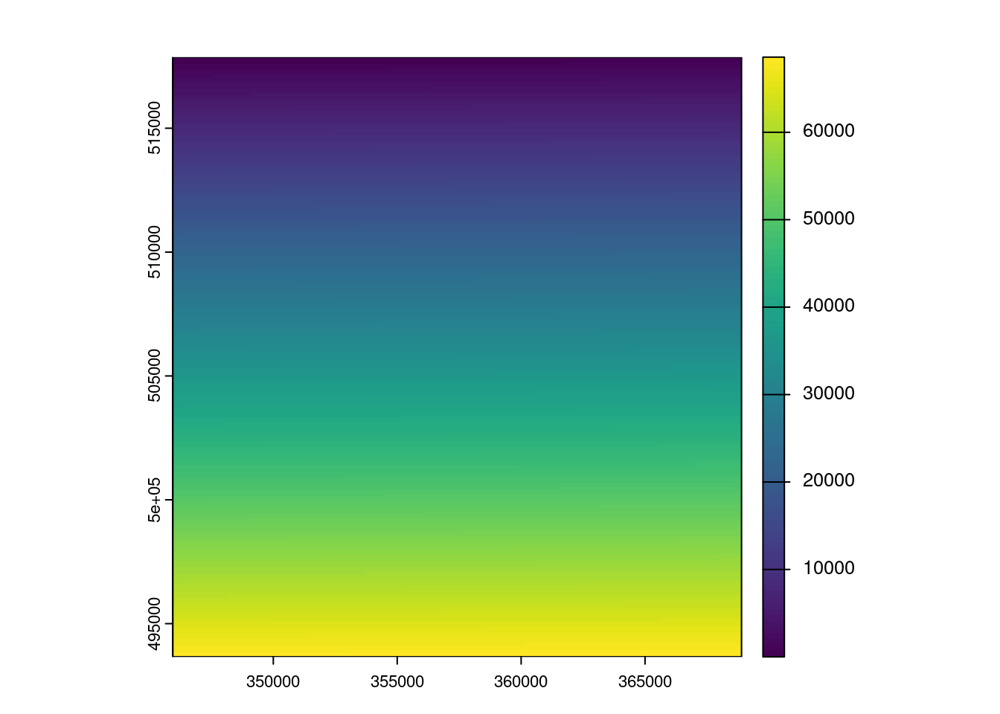
writeRaster(moja_siatka, "out/out_moja_siatka.tif")3.6.2 Przycięcie danych rastrowych do zasięgu warstwy
Funkcja crop() pozwala na przycięcie warstwy rastrowej do granic wyznaczonych przez warstwę wektorową.
poznan_rst = crop(moja_siatka, poznan, mask = TRUE)plot(poznan_rst)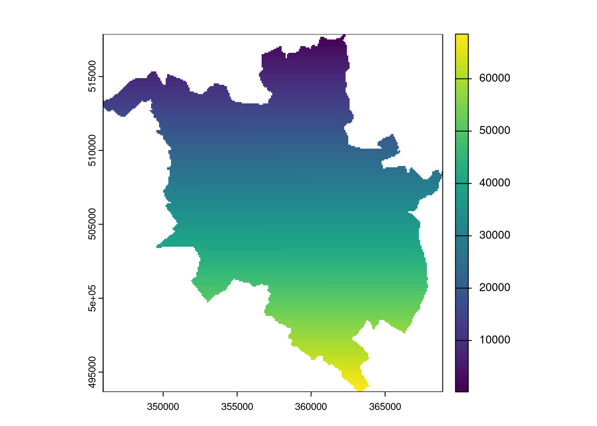
3.6.3 Zmiana rozdzielczości
Funkcja aggregate() pozwala na agregację warstwy rastrowej. Warstwa rastrowa poznan_rst ma rozdzielczość 90m. Argument fact = 2 agreguję warstwę dwukrotnie zmniejszając rozdzielczość, po agregacji warstwa będzie miała rozdzielczość 180m. Argument fun oznacza funkcję jaka ma być wykorzystana do agregacji danych (np. suma, wartość minimalna lub maksymalna, średnia, itp.). W przykładzie nowa warstwa rastrowa będzie miała rozdzielczość 180m, a wartość komórek będzie sumą wartości z komórek 90m.
poznan_rst_agg = aggregate(poznan_rst, fact = 2, fun = "sum")
poznan_rst_aggclass : SpatRaster
size : 135, 128, 1 (nrow, ncol, nlyr)
resolution : 180, 180 (x, y)
extent : 345943.2, 368983.2, 493570, 517870 (xmin, xmax, ymin, ymax)
coord. ref. : ETRF2000-PL / CS92 (EPSG:2180)
source(s) : memory
name : lyr.1
min value : 1236
max value : 272612 Zagreguj warstwę rastrową srtm do rozdzielczości 360m. Jaką wartość musi przyjąć argument fact? Warstwa rastrowa srtm to cyfrowy model wysokościowy (DEM) zawierający w komórkach wartości wysokości n.p.m. Jaką funkcję należy użyć do aggregacji tych danych?
3.7 Wizualizacja danych przestrzennych w R
Istnieje wiele pakietów pozwalajacych na wizualizację danych przestrzennych. Poniżej pokazane są przykłady użycia pakietu tmap.
Główna idea stojąca za pakietem tmap mówi o łączeniu kolejnych linii kodu znakiem +, i te kolejne elementy będą wyświetlane po sobie. Złożona wizualizacja danych przestrzennych składa się z następujących elementów:
tm_shape()- podstawowa funkcja pakietu,która pozwala na zdefiniowanie jaki obiekt przestrzenny chcemy zwizualizować.Elementy odnoszące się do typów obiektów (np. dane punktowe, poligonowe, rastrowe, itp.)
tm_dots(),tm_symbols()- dane punktowetm_polygons(),tm_borders()- dane poligonowetm_raster()- dane rastrowe.
Dodatkowe elementy kompozycji mapy:
- tm_scale_bar() - podziałka liniowa
- tm_compass() - strzałka północy
Każda z powyższych składowych funkcji jest też łatwo modyfikowalna, pozwalając na wybranie zmiennej do przestawienia na mapie, stylu legendy, jej tytułu, itd.
3.7.1 Dane poligonowe
Podstawowa wizualizacja danych poligonowych składa się z dwóch elementów: tm_shape() oraz tm_polygons() (lub tm_borders()).
library(tmap)
tm_shape(powiaty_wlkp) +
tm_polygons()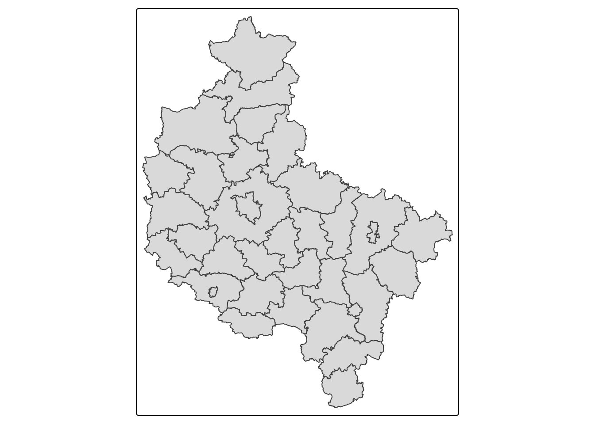
tm_shape(powiaty_wlkp) +
tm_borders(lwd = 2)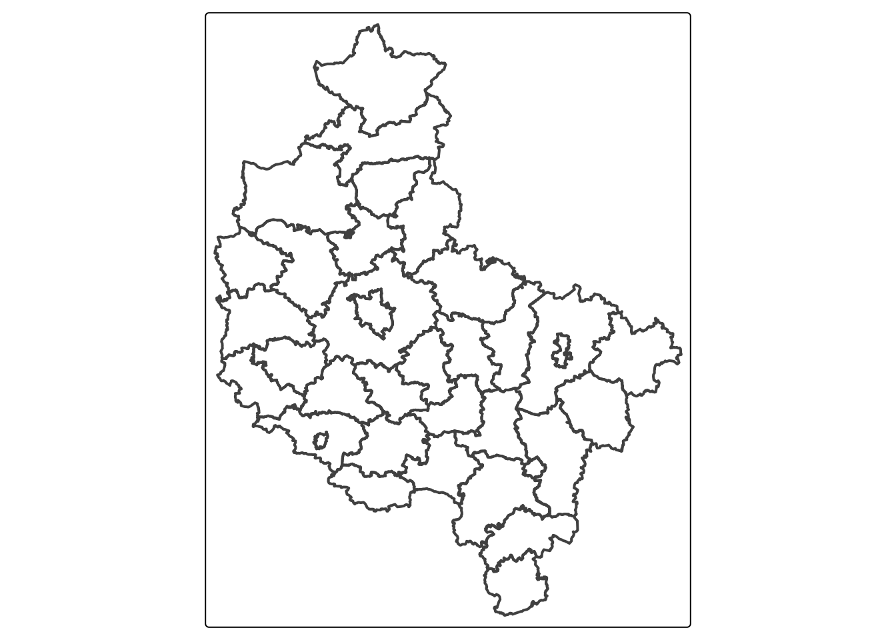
Następnie możemy definiować dodatkowe elementy: wizualizowana zmienna, wykorzystana paleta itp.
library(tmap)
tm_shape(powiaty_wlkp_attr) +
tm_polygons(fill = "sb2023", palette = "YlOrBr", title = "Stopa bezrobocia [%]")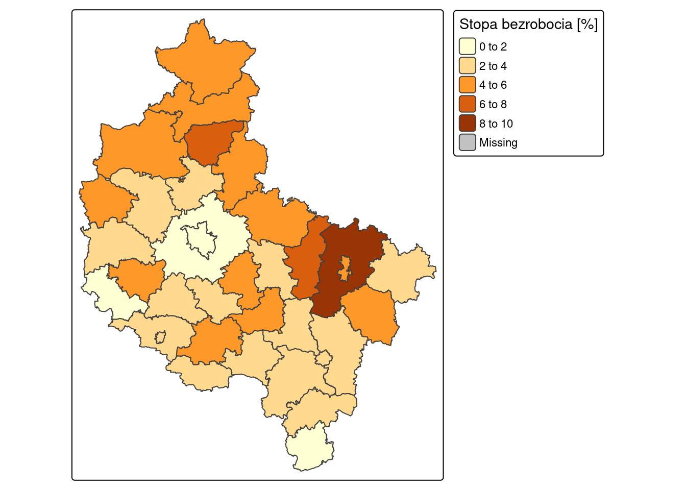
3.7.2 Dane punktowe
Podstawowa wizualizacja danych punktowych składa się z dwóch elementów: tm_shape() oraz tm_dots().
tm_shape(centroidy_attr) +
tm_dots()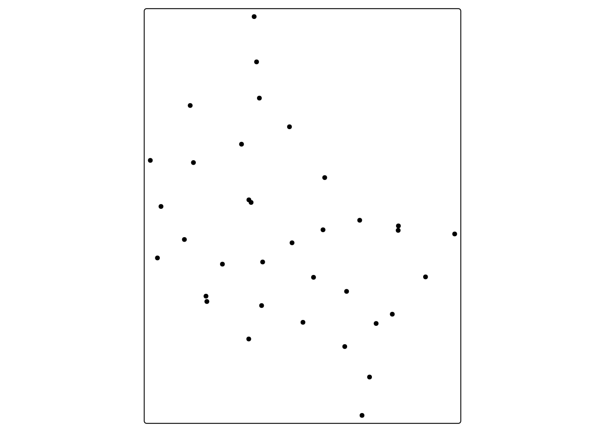
tm_shape(centroidy_attr) +
tm_dots(fill = "sb2023")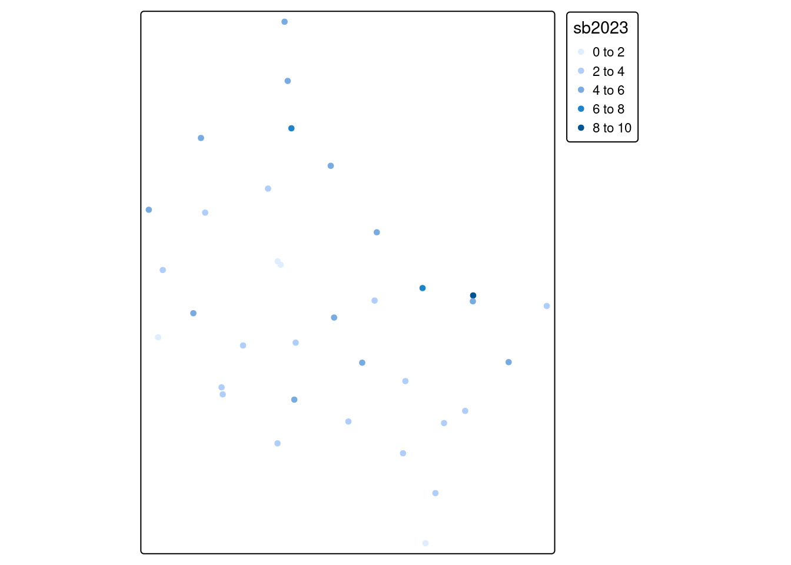
tm_shape(centroidy_attr) +
tm_dots(fill = "sb2023",
fill.scale = tm_scale_continuous(values = "viridis", label.na = "Brak danych"),
fill.legend = tm_legend(title = "Stopa bezrobocia"),
size = 1)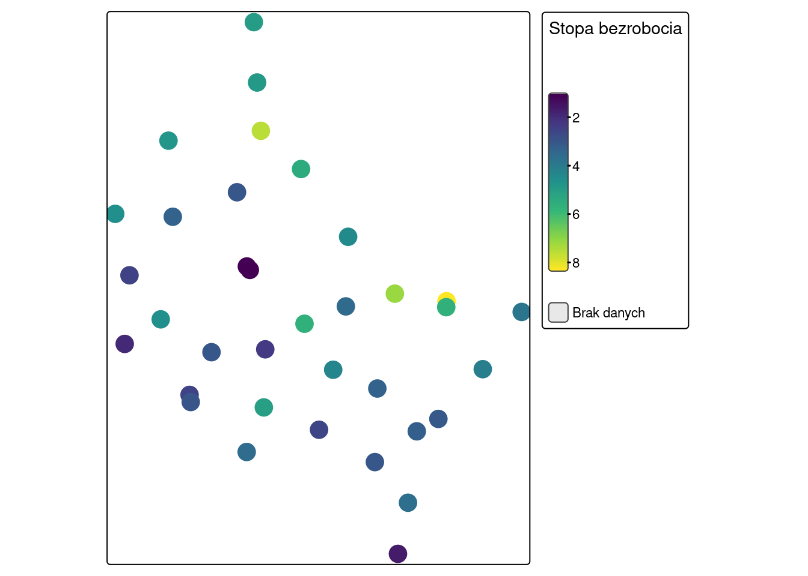
3.7.3 Dane rastrowe
Podstawowa wizualizacja danych rastrowych składa się z dwóch elementów: tm_shape() oraz tm_raster().
tm_shape(siatka_all) +
tm_raster("siatka-all_1") +
tm_scalebar() +
tm_compass(position = c("left", "top"))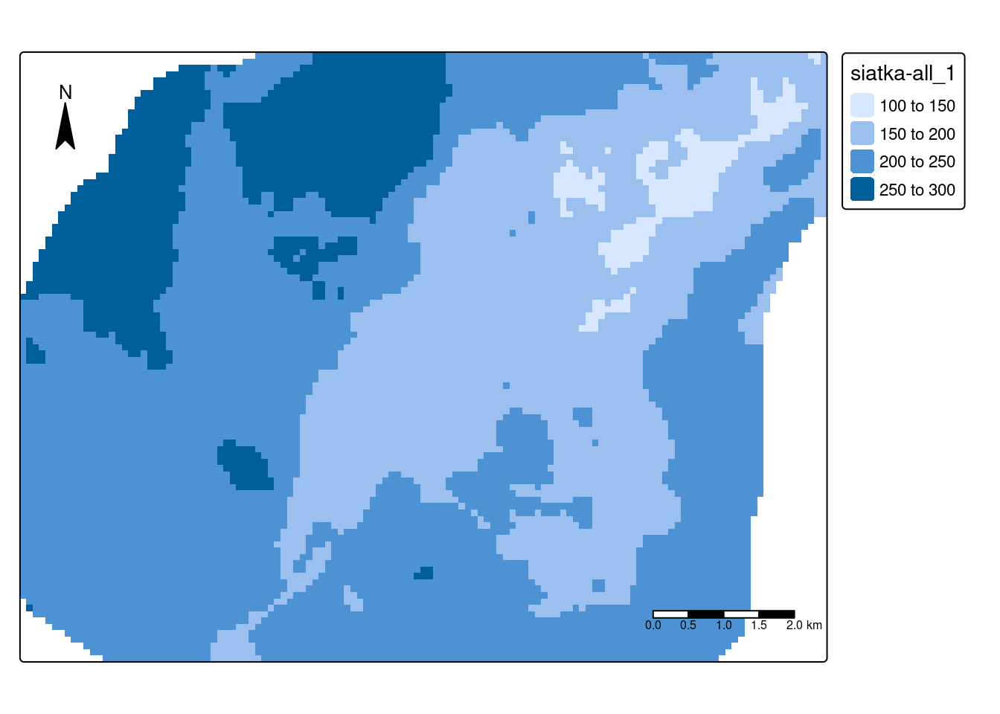
tm_shape(siatka_all) +
tm_raster(col = "siatka-all_1",
col.scale = tm_scale_continuous(values = "Spectral"),
col.legend = tm_legend(title = "m npm")) [cols4all] color palettes: use palettes from the R package cols4all. Run
`cols4all::c4a_gui()` to explore them. The old palette name "Spectral" is named
"brewer.spectral"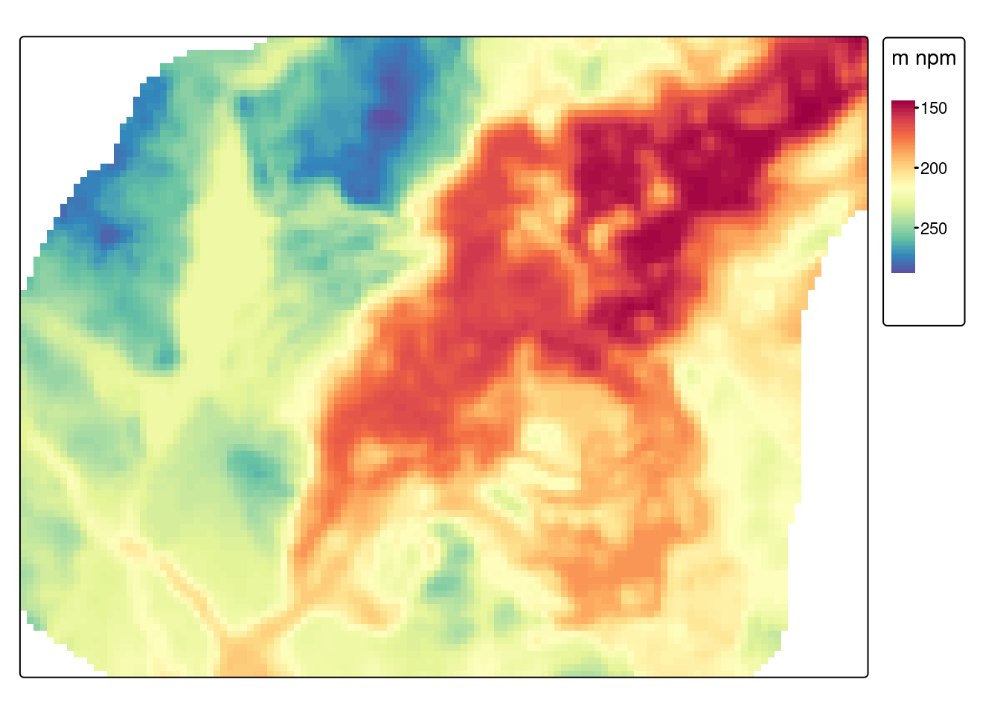
3.7.4 Łączenie warstw
Pakiet tmap pozwala także na tworzenie złożonych wizualizacji, łącząc obiekty różnego typu (np. dane poligonowe oraz punktowe lub dane rastrowe i wektorowe).
library(tmap)
tm_shape(powiaty_wlkp_attr) +
tm_polygons(fill = "sb2023", palette = "YlOrBr") +
tm_shape(centroidy_attr) +
tm_dots(size = 0.7)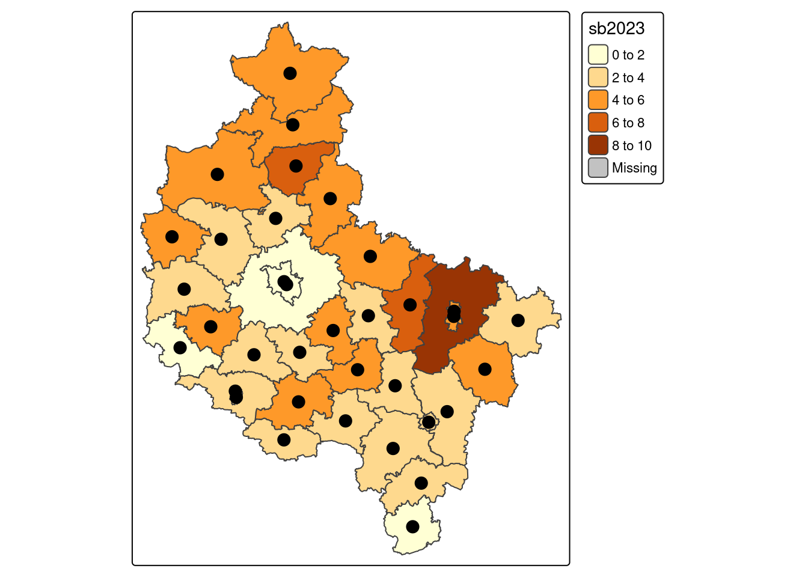
tm_shape(siatka_all) +
tm_raster(col = "siatka-all_1",
col.scale = tm_scale_continuous(values = "Spectral"),
col.legend = tm_legend(title = "m npm")) +
tm_shape(punkty_sf) +
tm_symbols(fill = "temp",
fill.scale = tm_scale_continuous(values = "viridis", label.na = "Brak danych"),
fill.legend = tm_legend(title = "Temperatura [*C]"),
col = "white",
size = 0.75) +
tm_scalebar()[cols4all] color palettes: use palettes from the R package cols4all. Run
`cols4all::c4a_gui()` to explore them. The old palette name "Spectral" is named
"brewer.spectral"
[plot mode] legend/component: Some components or legends are too "high" and are
therefore rescaled.
ℹ Set the tmap option `component.autoscale = FALSE` to disable rescaling.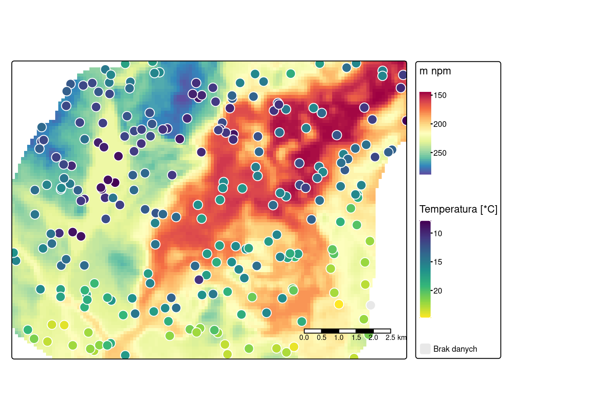
3.7.5 Zapisywanie map
tm = tm_shape(powiaty_wlkp) +
tm_polygons()
tmap_save(tm, "out/mapa.png", width = 600, height = 600)